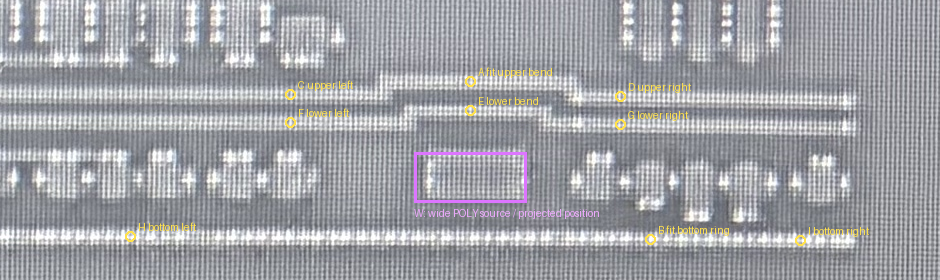
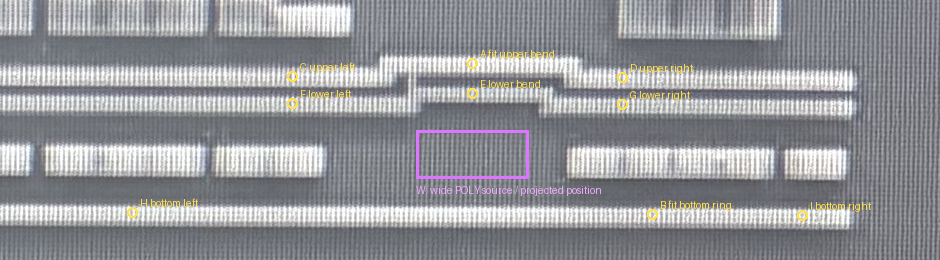
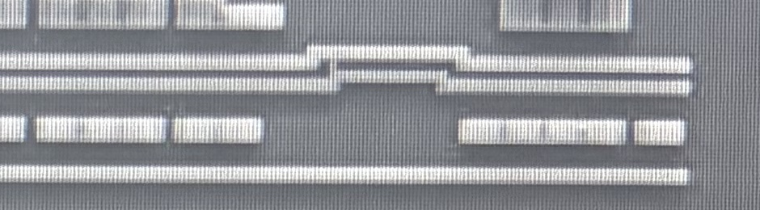
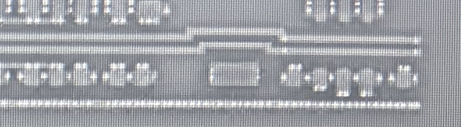
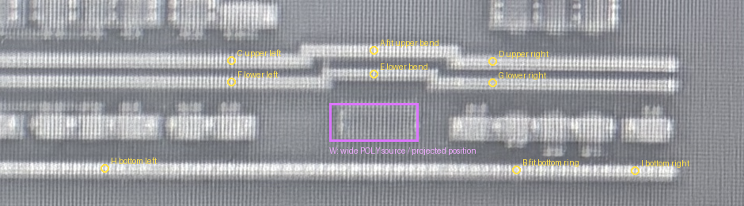

黄色 A–I 是同一结构的对应标记； 紫色 W 在 POLY 图是已确认宽POLY的既有观察框， 在 AA 图仅表示投影位置，不是新提取的 AA 边界。 宽POLY身份不重问，AA归属尚未裁决。





上侧拐弯平移估计 dx=2, dy=222 px，NCC=0.929。直接平移对下方横环最大偏差 7.00 px，不能称已精准对齐。使用上侧拐弯中心A与下方横环中心B估计局部纵向比例 0.955696；保留 x+2，y=0.955696×y+236.664557。其余7个位置检查最大纵向残差 2.28 px；下侧拐弯独立匹配 NCC=0.943。只适用于本局部，诊断预算5px不是实际PDK规则。
| 未参与纵向拟合的位置 | POLY实测 | AA实测 | 平移残差Y | 局部缩放残差Y |
|---|---|---|---|---|
| upper-left | [4570, 344] | [4572, 566] | 0.00 | 0.58 |
| upper-right | [4900, 346] | [4902, 567] | -1.00 | -0.34 |
| lower-step-center | [4750, 360] | [4752, 583] | 1.00 | 2.28 |
| lower-step-left | [4570, 372] | [4572, 593] | -1.00 | 0.82 |
| lower-step-right | [4900, 374] | [4902, 594] | -2.00 | -0.09 |
| bottom-left | [4410, 486] | [4412, 702] | -6.00 | 0.87 |
| bottom-right | [5080, 490] | [5082, 705] | -7.00 | 0.04 |
昨天的AA裁剪从y=570开始，截掉了上侧拐弯的凸起（约y=553）；旧页面上下参照不完整。现在通过同一拐弯、另一条平行环和下方横环检查位置，未把紫框强行移到邻近AA。
紫框仍处于拐弯下方、两侧AA之间。当前AA重建模型对此处没有分配器件AA，但这不能证明原图中没有AA，更不能据此改判为场区POLY。请先核对本页标记和叠图是否指向同一位置；若对应成立，再确定这里AA的实际范围或可见性。
本轮没有修改AA/POLY层几何或已审关系；U05及昨天批准范围保持。